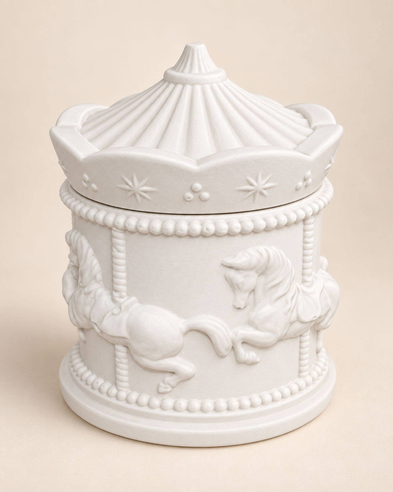
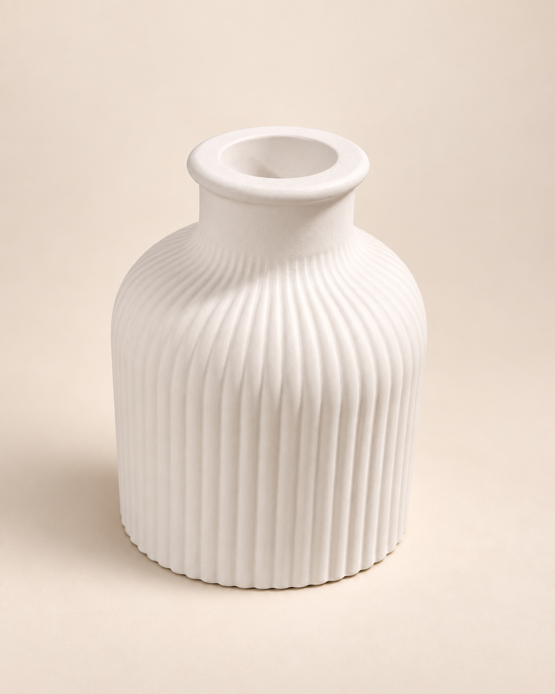
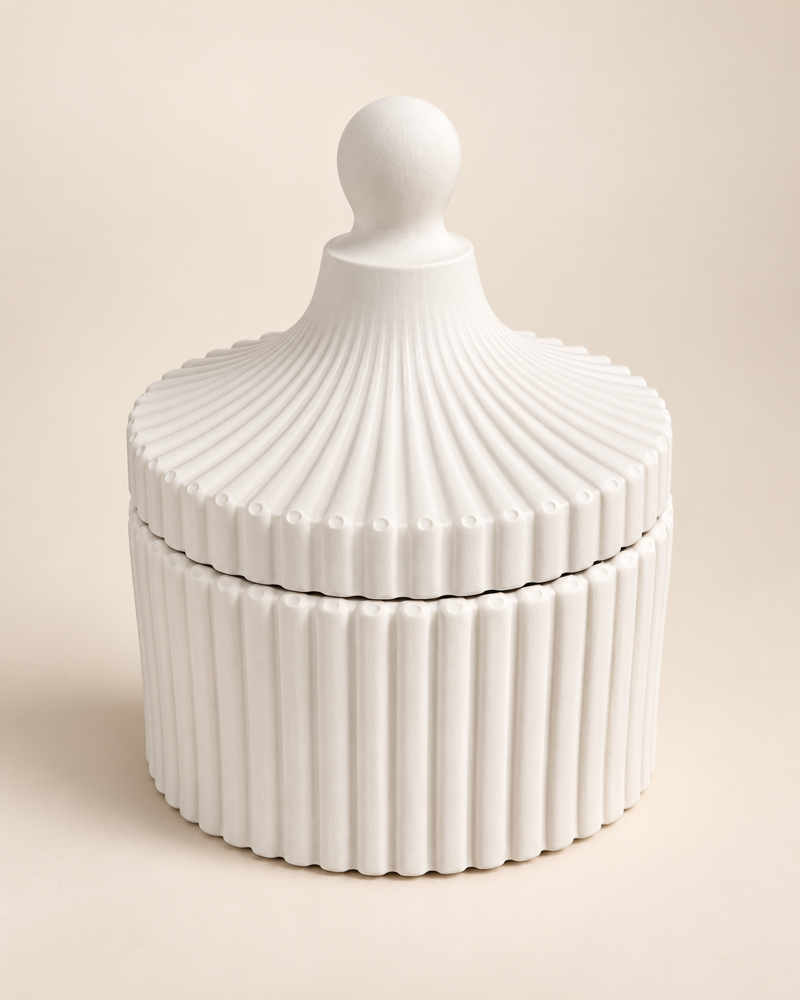

Detalles que transforman espacios
En Madame Ivonne creamos piezas de yeso pensadas para decorar, regalar y darle un detalle especial a cada espacio. Cada diseño combina delicadeza, dedicación y un estilo artesanal que hace única a cada pieza.
Nuestros productos destacados

Carrusel
El carrusel es una de las piezas favoritas entre nuestros clientes.

Florero
Una pieza delicada y versátil para decorar distintos ambientes de tu hogar.

Caramelera
Diseño elegante y artesanal, ideal para complementar cualquier espacio.
Un poco sobre nosotros...
Madame Ivonne nació de la unión de dos mundos distintos. Somos una pareja con profesiones diferentes, pero con una misma inquietud: crear algo propio con nuestras manos, dedicarle tiempo a los detalles y transformar una idea sencilla en una pieza con identidad.
Así comenzamos a trabajar con yeso, descubriendo en cada molde, textura y terminación una forma nueva de expresarnos. Lo que empezó como un proyecto compartido fue creciendo hasta convertirse en un espacio donde combinamos creatividad, paciencia y dedicación.
Cada pieza de Madame Ivonne está hecha con cuidado y pensada para aportar calidez, belleza y personalidad a los espacios. Nos gusta creer que no hacemos solamente objetos decorativos: creamos pequeños detalles capaces de acompañar momentos, regalos y rincones especiales.